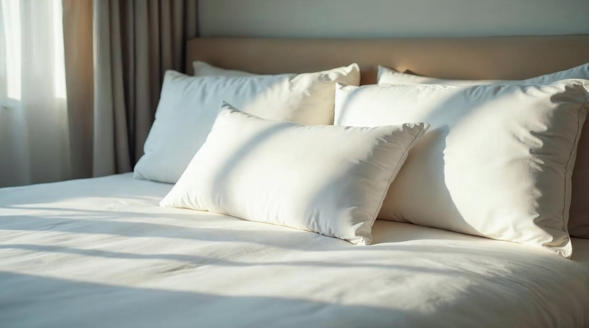
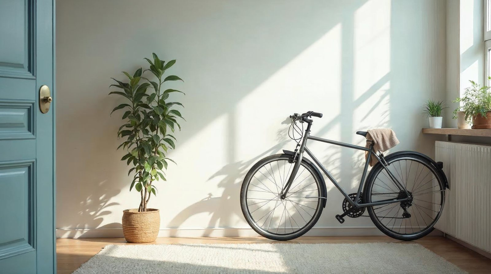

이종호 한의사 감수좋은꿈참사랑한의원 대표원장 (한의사 면허번호 19769)발행 2026-11-26 · 수정 2026-11-26
이 글의 차례
상도동 언덕길 계단을 오르다 무릎 안쪽 조금 아래가 '콕' 하고 집힙니다. 밤에 옆으로 누워 무릎끼리 맞닿으면 그 자리가 욱신해서 다리를 떼어 놓게 되고, 의자에서 일어설 때도 손으로 무릎을 짚게 됩니다. 무릎 관절이 닳은 건가 싶어 덜컥 겁이 나기도 합니다.
무릎 안쪽 관절선에서 손가락 두세 마디쯤 아래, 정강이뼈 안쪽에는 허벅지에서 내려온 힘줄 세 개가 모여 붙는 자리가 있습니다. 그 모양이 거위발을 닮았다고 해서 '거위발'이라고 부릅니다. 이 자리의 힘줄이나 그 아래 작은 물주머니가 예민해지면 계단을 오를 때, 일어설 때, 무릎끼리 닿을 때 아픕니다.
저는 이럴 때 먼저 무릎 관절 안쪽의 연골이나 관절 자체에서 오는 통증은 아닌지, 붓고 열이 나지는 않는지를 가립니다. 체외충격파는 그렇게 확인한 뒤 오래 이어지는 힘줄 부위 통증에 검토할 수 있는 방법 가운데 하나입니다.
진료실에서 이런 말씀을 자주 듣습니다. "무릎이 닳아서 그런 거죠? 이제 계단은 피해야 하나요?" 또 "무릎 사진은 괜찮다는데 왜 아픈지 모르겠어요" 하십니다. 무릎이 아프면 앞으로 걷는 일 자체가 걱정되니, 그 불안이 얼마나 컸을까 싶습니다.
같은 무릎 안쪽 통증이라도 관절 안에서 오는 것과 관절 바깥 힘줄이 붙는 자리에서 오는 것은 살피는 방향이 다릅니다. 오늘은 그 차이와 함께, 체외충격파는 어디까지 도울 수 있는지 차근차근 이야기해 보겠습니다.
왜 무릎 안쪽 아래가 아플까요
거위발에 모여 붙는 힘줄 세 개는 허벅지 안쪽과 뒤쪽에서 내려와 무릎을 굽히고 안쪽을 받쳐 주는 일을 합니다. 계단을 오르고, 쪼그려 앉았다 일어서고, 방향을 틀 때마다 이 자리가 당겨집니다.
이 힘줄과 뼈 사이에는 마찰을 줄여 주는 작은 물주머니가 있습니다. 힘줄이 지치거나 물주머니가 자극을 받으면 그 자리가 붓는 듯 예민해지고 누르면 콕 집히듯 아픕니다. 겉으로 크게 붓지 않아도 손가락으로 정확히 짚으면 '바로 거기' 하실 때가 많습니다.
계단과 언덕이 많은 길을 매일 오르내리는 생활, 갑자기 늘린 등산이나 걷기, 체중이 늘어난 시기, 무릎이 안쪽으로 모이는 걸음걸이와 평발 경향이 부담을 키운다고 알려져 있습니다. 무릎 관절염이 있는 분에게 함께 생기는 경우도 흔합니다.
허벅지 안쪽과 뒤쪽 근육이 뻣뻣하게 굳어 있으면 힘줄이 붙는 자리를 계속 당기게 됩니다. 그래서 저는 아픈 자리만 보지 않고 허벅지와 골반, 발의 모양까지 함께 봅니다.
발도 무릎과 이어져 있습니다. 발바닥 아치가 낮아 서 있을 때 발목이 안쪽으로 무너지면 정강이가 안으로 돌고, 무릎 안쪽 힘줄이 붙는 자리가 더 당겨질 수 있습니다. 그래서 진료실에서는 양말을 벗고 서 보시라고 부탁드리기도 합니다. 신발 바닥이 어느 쪽으로 먼저 닳는지 보여 주시면 그것도 좋은 단서가 됩니다.
무릎 관절염, 연골 손상과는 어떻게 다를까요
무릎 관절 안쪽이 닳아 생기는 통증은 대개 관절선, 즉 무릎뼈 높이의 안쪽 틈 자리가 아픕니다. 아침에 뻣뻣하고, 오래 걸으면 관절 전체가 붓는 느낌이 들 수 있습니다. 거위발 부위 통증은 그보다 손가락 두세 마디 아래, 정강이뼈 안쪽이 한 점으로 아픈 경우가 많습니다.
무릎을 비틀다 다친 뒤 무릎이 걸리거나 '딸깍' 하며 펴지지 않는 느낌이 있다면 관절 안 연골판의 손상을 생각해야 합니다. 이런 경우에는 정형외과에서 영상 검사를 먼저 받아 보시길 권합니다.
물론 관절염과 거위발 부위 통증이 함께 있는 경우도 많습니다. 사진에서 관절이 조금 닳았다는 말을 들었더라도, 지금 아픈 자리가 관절 바깥 힘줄 쪽이라면 그 자리를 따로 살펴 볼 여지가 있습니다. 반대로 거위발이라고 생각했는데 관절 안 문제가 함께 있는 경우도 있어 진찰로 같이 가려 봅니다.

체외충격파는 이 자리에서 어떻게 쓰나요
체외충격파는 피부를 절개하지 않고 몸 밖에서 짧은 압력파를 아픈 힘줄 주변에 전달하는 방법입니다. 거위발 부위처럼 힘줄이 뼈에 붙는 자리의 오래된 통증에도 연구되어 온 방법으로, 예민해진 자리에 자극을 주어 몸이 그 자리를 다시 돌보도록 돕는 쪽으로 설명됩니다.
다만 반응은 사람마다 다르고, 이 부위는 연구가 아주 많지는 않습니다. 그래서 저는 체외충격파를 먼저 꺼내기보다 걷는 양과 계단, 잠자는 자세를 조절해 보고, 그래도 몇 주째 같은 자리가 아플 때 검토합니다.
체외충격파가 대신하기 어려운 것도 분명합니다. 닳은 관절 연골을 되돌리지 못하고, 찢어진 연골판을 이어 주지도 못합니다. 무릎이 안쪽으로 모이는 걸음걸이가 그대로라면 같은 자리가 다시 지칠 수 있습니다.
정강이뼈가 피부 가까이 있어 받을 때 뼈가 울리는 느낌이나 시큰함이 또렷할 수 있습니다. 세게 할수록 좋은 것이 아니라, 견딜 수 있는 범위 안에서 반응을 보며 맞춥니다. 불편하면 바로 말씀해 주세요.
몇 번, 어떤 간격으로 할지는 진찰 뒤 함께 정합니다. 보통은 간격을 두고 받으며 그사이 계단과 밤잠이 어땠는지를 듣고 다음 강도와 자리를 정합니다. 받은 뒤 하루 이틀 뻐근함이 남을 수 있어 그 변화도 함께 여쭙습니다.
받기 전에 미리 알려 주세요
- 혈액을 묽게 하는 약(항응고제·항혈소판제)을 드시는 경우
- 임신 중이거나 임신 가능성이 있는 경우
- 무릎에 인공관절이나 금속 고정물이 있거나, 심장박동기 같은 전자 의료기기가 있는 경우
- 치료할 자리에 상처, 습진, 염증이 있는 경우
- 최근 같은 무릎에 스테로이드 주사나 관절 주사를 맞은 경우
무릎 주사는 종류와 날짜를 함께 알려 주시면 언제 할지 신중하게 정합니다. 다리 혈관 질환이나 하지정맥류로 치료 중이시라면 그것도 말씀해 주세요. 드시는 약은 처방한 의사와 상의 없이 줄이거나 끊지 않습니다.
먼저 이렇게 여쭙니다
- 무릎 안쪽 가운데 관절 틈 자리가 아픈가요, 그보다 아래쪽 한 점이 아픈가요?
- 계단 오르기, 계단 내려가기, 의자에서 일어서기 가운데 언제 가장 아픈가요?
- 밤에 옆으로 누워 무릎끼리 닿을 때 아픈가요?
- 무릎이 붓거나 걸리거나, 갑자기 힘이 빠지는 느낌이 있나요?
- 그 무렵 등산, 걷기, 계단 운동을 늘리셨나요?
- 무릎 사진을 찍은 적이 있다면 어떤 설명을 들으셨나요?
처음부터 다 기억하지 못하셔도 괜찮습니다. 생각나는 것부터 말씀해 주시면 나머지는 제가 하나씩 여쭙겠습니다.
체외충격파를 받는 날은 이렇게 흘러갑니다
먼저 지난번 이후 계단과 밤잠이 어땠는지를 듣습니다. 그다음 의자에서 일어서기, 한 계단 오르기 같은 같은 동작으로 다시 확인합니다. 같은 동작으로 비교해야 작은 변화도 읽을 수 있습니다.
무릎 위까지 걷어 올리기 쉬운 넉넉한 바지를 입고 오시면 편합니다. 누운 자세에서 무릎 아래에 쿠션을 받쳐 살짝 굽히고, 가장 예민한 지점을 손가락으로 짚어 확인합니다. 필요하면 초음파로 다시 봅니다.
장비는 원장이 직접 대고 낮은 강도로 시작합니다. 받는 중에 여러 번 괜찮은지 여쭙고, 뼈가 울리는 느낌이 강하면 각도와 강도를 바꿉니다. 받은 자리와 강도, 받은 뒤 느낌은 기록해 두었다가 다음 진료에서 비교합니다.
일상에서 먼저 해 볼 수 있는 것
- 계단은 한 칸씩 천천히, 난간을 잡고 오르기, 가능하면 엘리베이터와 나눠 쓰기
- 잘 때 옆으로 누우면 무릎 사이에 베개를 끼워 무릎끼리 닿지 않게 하기
- 쪼그려 앉기, 양반다리처럼 무릎을 깊게 굽히는 자세 줄이기
- 오래 앉았다 일어설 때 무릎을 몇 번 굽혔다 펴고 일어서기
걷기를 아예 멈추면 다리 근육이 버티는 힘도 같이 떨어집니다. 언덕과 계단은 잠시 줄이고, 평지에서 아프지 않은 만큼 걷는 쪽을 권합니다. 허벅지 근육을 천천히 되찾는 운동은 진찰 뒤 통증 정도를 보고 함께 정합니다.
체외충격파를 받은 날은 등산과 계단 운동, 오래 걷기는 쉬시길 권합니다. 받은 자리가 평소와 다르게 붓거나 멍이 오래가면 전화로 알려 주세요.
이런 생활에서 자주 이야기됩니다
상도동과 노량진 사이는 언덕과 계단이 유난히 많은 동네입니다. 장바구니를 들고 언덕을 오르내리는 길, 지하철 환승 계단, 아파트 단지 사이 경사로까지 무릎 안쪽이 쉴 틈이 많지 않습니다. 그래서 어떤 길로 다니시는지, 우회할 수 있는 길이 있는지도 함께 여쭙니다.
건강을 위해 등산이나 계단 오르기를 새로 시작한 분도 흔합니다. 운동을 그만두라는 말보다, 오르막보다 내리막에서 무릎이 더 애쓴다는 점을 말씀드리고 스틱 사용과 내려오는 속도, 쉬는 날을 함께 정합니다.
손주를 돌보며 아이를 안고 쪼그려 앉았다 일어서는 일이 잦은 분, 바닥 생활이 많아 양반다리로 오래 앉는 분도 자세 하나만 바꿔도 무릎 안쪽이 덜 눌립니다. 낮은 의자 하나를 곁에 두는 것만으로도 하루에 무릎을 깊게 굽히는 횟수가 꽤 줄어듭니다.

얼마나 지켜보고, 언제 상담할까요
계단이나 등산을 늘린 뒤 생긴 가벼운 통증이라면 1~2주 동안 계단과 언덕을 줄이고 잠자는 자세를 바꾸며 지켜볼 수 있습니다. 누르면 아픈 정도가 조금씩 줄어드는지 살펴보세요.
2~3주가 지나도 계단마다 같은 자리가 아프거나, 밤에 무릎끼리 닿아 깨는 날이 이어진다면 진찰을 받아 보시길 권합니다. 아픈 무릎을 아끼느라 반대쪽 무릎과 허리가 더 일하게 되기 전에 살펴보는 편이 좋습니다.
한의원에서 함께 살필 수 있는 경우
- 무릎 안쪽 아래 한 점 통증이 몇 주에서 몇 달째 이어지는 경우
- 계단을 오르거나 의자에서 일어설 때마다 같은 자리가 아픈 경우
- 무릎 사진에서 큰 문제는 없다고 들었는데 통증이 남는 경우
- 무릎과 함께 허벅지, 골반, 발목이 굳어 있는 경우
좋은꿈참사랑한의원에서는 문진과 맥으로 몸 상태를 먼저 보고, 무릎 관절과 힘줄 부위를 하나씩 눌러 보며 통증이 어디서 오는지 가립니다. 필요하다고 판단될 때 초음파로 확인하고, 체외충격파가 맞는다고 판단되면 원내 장비(제우스·한일티엠) 가운데 부위에 맞는 것을 골라 원장이 직접 진행합니다.
허벅지 근육이 굳어 있으면 침이나 약침을 이어서 쓰기도 하고, 골반과 걸음걸이의 균형이 함께 관련되어 보이면 추나를 함께 살핍니다. 체외충격파를 할지, 몇 번 어떤 간격으로 할지, 비용은 어떤지는 진찰 뒤 이유와 함께 안내해 드립니다. 미리 궁금하시면 방문 전 전화로 확인해 주세요.
이렇게 기록해 오시면 상담이 쉬워집니다
- 계단을 오를 때의 불편 정도(0~10점)
- 밤에 무릎 때문에 깬 횟수
- 하루 걸음 수와 계단, 언덕, 등산을 한 날
- 체외충격파를 받은 뒤 하루, 사흘째의 느낌
매일 같은 계단, 같은 칸 수를 기준으로 점수를 적어 오시면 비교가 훨씬 쉬워집니다. 기억나는 만큼만 적어 오셔도 충분합니다.
이런 증상은 먼저 확인이 필요합니다
- 넘어지거나 무릎을 비튼 뒤 붓고 체중을 싣기 어려운 경우
- 무릎이 걸려서 펴지지 않거나 갑자기 힘이 빠져 주저앉는 경우
이런 신호가 있으면 한의원보다 가까운 병원이나 응급실을 먼저 찾으세요.
무릎이 아프면 걷는 일이 겁나고, 걷지 않으면 마음까지 움츠러듭니다. 그 걱정을 혼자 안고 계단 앞에서 망설이셨을 시간이 마음에 걸립니다. 걷는 즐거움을 놓지 않도록 무릎이 덜 애쓰는 길을 같이 찾아보겠습니다. 다음에 오시면 집 앞 계단을 오를 때 몇 점이었는지부터 여쭙겠습니다.
함께 읽으면 좋은 글
- 무릎뼈 아래가 아파 점프나 쪼그려 앉기가 불편할 때는 어떻게 살피나요?
- 계단을 내려갈 때 무릎이 아프면 한의원에서는 무엇을 먼저 묻나요?
- 상도동 언덕길과 계단을 매일 오르내릴 때 무릎은 어떻게 챙기나요?
- 체외충격파는 어떤 진료이고, 어떤 통증에 어떻게 사용하나요?
여쭙는 것
- 무릎 안쪽 가운데 관절 틈 자리가 아픈가요, 그보다 아래쪽 한 점이 아픈가요?
- 계단 오르기, 계단 내려가기, 의자에서 일어서기 가운데 언제 가장 아픈가요?
- 밤에 옆으로 누워 무릎끼리 닿을 때 아픈가요?
생활에서 해 볼 것
- 계단은 한 칸씩 천천히, 난간을 잡고 오르기, 가능하면 엘리베이터와 나눠 쓰기
- 잘 때 옆으로 누우면 무릎 사이에 베개를 끼워 무릎끼리 닿지 않게 하기
- 쪼그려 앉기, 양반다리처럼 무릎을 깊게 굽히는 자세 줄이기
한의원에서 함께 살필 것
- 무릎 안쪽 아래 한 점 통증이 몇 주에서 몇 달째 이어지는 경우
- 계단을 오르거나 의자에서 일어설 때마다 같은 자리가 아픈 경우
- 무릎 사진에서 큰 문제는 없다고 들었는데 통증이 남는 경우
먼저 확인이 필요한 신호
- 넘어지거나 무릎을 비튼 뒤 붓고 체중을 싣기 어려운 경우
- 무릎이 걸려서 펴지지 않거나 갑자기 힘이 빠져 주저앉는 경우
한눈에 보는 표
| 구분 | 핵심 |
|---|---|
| 여쭙는 것 | 무릎 안쪽 가운데 관절 틈 자리가 아픈가요, 그보다 아래쪽 한 점이 아픈가요? 계단 오르기, 계단 내려가기, 의자에서 일어서기 가운데 언제 가장 아픈가요? |
| 생활에서 해 볼 것 | 계단은 한 칸씩 천천히, 난간을 잡고 오르기, 가능하면 엘리베이터와 나눠 쓰기 잘 때 옆으로 누우면 무릎 사이에 베개를 끼워 무릎끼리 닿지 않게 하기 |
| 한의원에서 함께 살필 것 | 무릎 안쪽 아래 한 점 통증이 몇 주에서 몇 달째 이어지는 경우 계단을 오르거나 의자에서 일어설 때마다 같은 자리가 아픈 경우 |
| 먼저 확인이 필요한 신호 | 넘어지거나 무릎을 비튼 뒤 붓고 체중을 싣기 어려운 경우 무릎이 걸려서 펴지지 않거나 갑자기 힘이 빠져 주저앉는 경우 |
자주 묻는 질문
무릎 안쪽이 아프면 관절염인가요?
그럴 수도 있지만, 관절 바깥 힘줄이 붙는 자리가 예민해진 경우도 있습니다. 아픈 자리가 관절 틈인지 그보다 아래인지를 짚어 보고 함께 구분합니다.
관절염이 있어도 체외충격파를 받을 수 있나요?
관절염과 힘줄 부위 통증이 함께 있는 경우가 많습니다. 지금 아픈 자리가 어디인지 확인한 뒤 필요하다고 판단될 때 검토합니다.
인공관절 수술을 받았는데 받을 수 있나요?
먼저 알려 주세요. 수술 부위와 시기, 삽입물을 확인한 뒤 적용 여부를 신중하게 정합니다.
계단은 아예 피해야 하나요?
아예 피하기보다 줄이고, 난간을 잡고 천천히 오르시길 권합니다. 평지 걷기는 아프지 않은 만큼 이어 가세요.
무릎 보호대를 차는 것이 좋을까요?
보호대가 마음을 편하게 해 주기도 하지만 너무 오래 차면 다리 근육을 덜 쓰게 될 수 있습니다. 언제 찰지는 진찰 뒤 함께 정합니다.
좋은꿈참사랑한의원은 재진 때 지난번 이야기부터 이어서 여쭙니다. 진료시간과 예약은 오시는 길에서 확인하세요.
어디서 상담받을 수 있나요?
좋은꿈참사랑한의원은 서울 동작구 만양로2길 2 신성빌딩 3층·5층(서울 동작구 상도동, 7호선 상도역 3번 출구 근처)에 있습니다. 한의사 3명(이종호 대표원장, 조영기 수석진료원장, 정원영 진료원장)이 진료합니다. 진료시간은 평일 09:30~20:00(점심 13:00~14:00), 토·일·공휴일 09:30~15:00이며, 방문 전 전화로 확인을 권합니다. 예약은 네이버 예약, 카카오톡 상담, 전화 02-815-7510로 받습니다.
이 글은 일반적인 건강 정보이며 개인의 진단이나 치료를 대신하지 않습니다. 증상이 있거나 복용 중인 약이 있다면 진료를 통해 확인하세요. 치료 효과는 개인마다 다를 수 있습니다.
작성 기준: 일반적으로 알려져 있는 건강 정보를 참고해 정리했습니다(대표원장 감수). 증상 기록은 1~2주 동안 하루 1회, 비슷한 시간에 적어 오시면 지난 상태와 비교하기 쉽습니다.